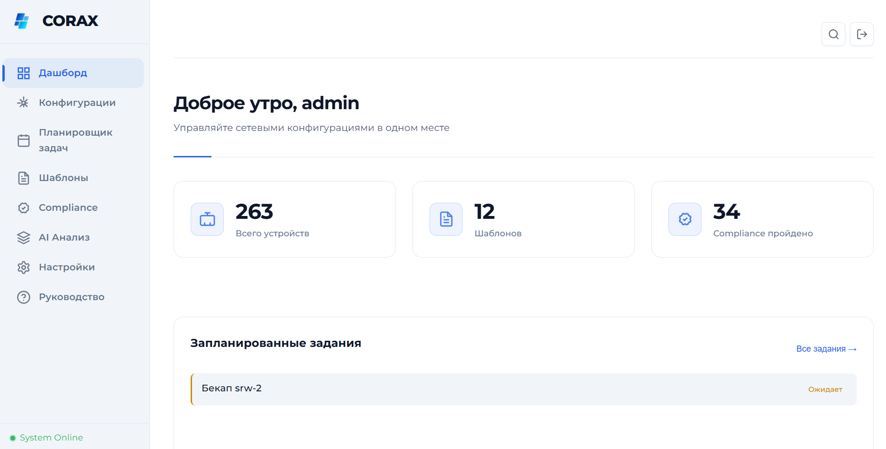

CORAX
CORAX
Configuration Oracle & Reactive Analysis eXpert
Централизованное управление конфигурациями сетевого оборудования.
Compliance-проверки, AI-анализ, Telegram-уведомления и интеграция с Oxidized.

Всё для управления сетью
Восемь модулей, объединённых в единый интерфейс: от сбора конфигураций до AI-анализа и Telegram-уведомлений.
Скриншоты системы
Современный веб-интерфейс для управления сетевым оборудованием. Замените заглушки на реальные скриншоты проекта.
Схема компонентов
Поток данных от сетевых устройств до веб-интерфейса и Telegram.
Как всё работает
Пять этапов — от сбора конфигураций до оповещений.
Стек разработки
Современные и проверенные инструменты для надёжного production-приложения.
Production-ready защита
Многоуровневая система защиты: аутентификация, защита от атак, валидация и аудит всех действий.
- От 8 до 72 символов
- Минимум 1 заглавная буква
- Минимум 1 строчная буква
- Минимум 1 цифра
- Минимум 1 специальный символ
Быстрый старт
Четыре шага до работающего CORAX в вашей сети.
# Клонировать репозиторий git clone https://github.com/your-username/corax.git cd corax # Проверить версию Python (3.11+) python --version
# Windows python -m venv venv venv\Scripts\activate # Linux / macOS python3 -m venv venv source venv/bin/activate # Установить зависимости pip install -r requirements.txt
# Обязательные JWT_SECRET_KEY=ваш-ключ-минимум-32-символа ENVIRONMENT=development CORS_ORIGINS=http://localhost:8010 # Telegram (опционально) TELEGRAM_BOT_TOKEN=your-bot-token NCM_WEBAPP_URL=https://your-domain.com # AI / LM Studio (опционально) LMSTUDIO_ENABLED=1 LMSTUDIO_BASE_URL=http://127.0.0.1:1234/v1 LMSTUDIO_MODEL=vikhr-llama3.1-8b-instruct # Oxidized (опционально) OXIDIZED_ENABLED=1 OXIDIZED_BASE_URL=http://127.0.0.1:8888
# Создать администратора python scripts/create_admin.py # Режим разработки python -m uvicorn backend.main:app \ --host 127.0.0.1 --port 8010 --reload # Production (4 воркера) python -m uvicorn backend.main:app \ --host 0.0.0.0 --port 8010 --workers 4 # Открыть браузер → http://127.0.0.1:8010 # Документация → http://127.0.0.1:8010/docs
Основные эндпоинты
Интерактивная документация: /docs (Swagger UI)
и /redoc (ReDoc).
| Метод | Путь | Описание |
|---|---|---|
| POST | /api/auth/login | Авторизация, получение JWT в httpOnly cookie |
| POST | /api/auth/logout | Выход, инвалидация токена |
| GET | /api/auth/me | Данные текущего пользователя |
| GET | /api/dashboard/stats | Статистика для дашборда |
| GET | /api/configs | Список конфигураций |
| GET | /api/configs/{id} | Детали конфигурации |
| POST | /api/configs/{id}/backup | Создать резервную копию |
| GET | /api/alerts | Список оповещений |
| GET | /api/tasks | Задачи планировщика |
| POST | /api/tasks | Создать задачу |
| POST | /api/ai/analyze | AI-анализ конфигурации (LM Studio) |
| WS | /ws/logs | WebSocket — логи в реальном времени |